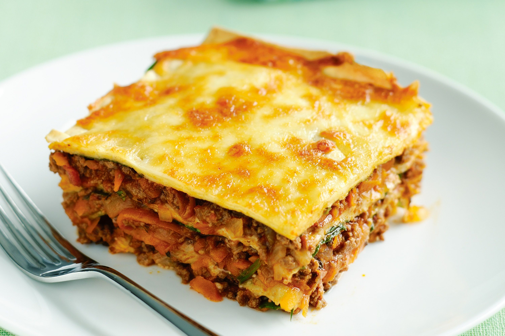

Lasagne

Description
One of my favourite recipes, lasagne looks daunting but is easier to make than it looks.
When your friends come for dinner, they will be super-impresssed!
Beef mince, pasta sheets, bechamel sauce, as much cheese as you fancy and any vegetables you love, diced or sliced (nice and small), are all you need to make this mouth-watering dish.
Add a little salad and/or coleslaw and it will surprise you how far this recipe goes.
Feeding the five thousand might be a bit of a stretch, but your dinner party will certainly go down in history regardless!
Ingredients
- Beef mince
- Pasta sheets
Bechamel sauce:
- More cheese!
- Vegetables. Anything you like really, but we suggest:
- Onion
- Carrot
- Courgette
- Sweetcorn
- Tin of tomatoes
- OPTIONAL:
- Garlic bread, for the table
- Bag of salad
- Coleslaw (with a hint of chilli)
Steps
- Start to warm the ingredients for your bechamel sauce together in a pan.
- Chop your vegetables into small cubes (or thin slices, if you prefer.
Check your sauce between each vegetable you chop; if it starts to “catch”, reduce your heat slightly and stir to unstick it.
- Fry the vegetable cubes you want to use as a base in a little oil, butter or water. Slow and steady is key here. Don't forget to keep checking your sauce!
- Once they soften and start to brown, add the beef mince and fry that off. Once the meat is a lovely brown-grey, add your tin of tomatoes to the pan and the other chopped vegetables.
- Taste and season your bechamel sauce as appropriate and, once you are happy with its consistency, take it off the heat. It should be pourable but not runny.
Transfer to a Pyrex jug for ease of adding it in layers when assembling the lasagne later.
- Preheat your oven to 200°C (180°C fan). Continue to simmer the vegetable mix until it starts to come together.
Don't worry so much about its consistency, as long as it smells delicious!
- Line the bottom of an oven-proof dish with some of your pasta sheets. Apply a layer of your meat and vegetable mixture, coat with a layer of bechamel, then sprinkle some cheese if you have any left over from earlier.
- Add another base of pasta sheets, and alternate as above until you have used up your meat, vegetables and bechamel.
Top with a final layer of pasta, and cheese if you are adding more.
- Stick your assembled lasagne into the pre-heated oven for 20-30mins, or until it is bubbling and the cheese and pasta on top is golden.
- Enjoy (both the meal and assured compliments from your guests...)!